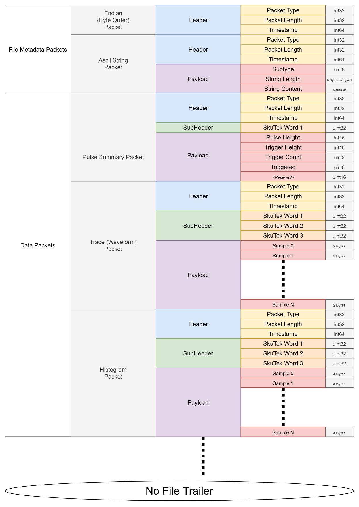

Gretina Event Builder (GEB) Format
Important
This format can be loaded into Python with skutils.Loader.GretinaLoader
Format Features
Type |
Gretina Event Builder (binary) |
|---|---|
Extension |
“.geb” |
Contains Event Timestamp |
Yes |
Contains Channel Timestamps |
Yes |
Contains Pulse Summary (DSP Quantities) |
Yes |
Contains Waveforms |
Yes |
Average Data Rate |
6.61MB/s |
512 Sample Waves Per Second |
3229 |
Decoding Example
Skutils Loaders provide EventInfo objects which contain all Summary and Waveform data
associated with your events.
See EventInfo and ChannelData
for more information about available quantities.
1import skutils
2filenames = ['/path/to/your/file_seq000001.geb',
3 '/path/to/your/file_seq000002.geb']
4
5for event in skutils.quickLoad(filenames):
6 # grab event timestamp and the channels in this event
7 event_timestamp = event.event_timestamp
8 channels = event.channels
9 # Pulse Summary Quantities can be saved in this format
10 for ch_data in event.channel_data:
11 print(f"Pulse Height for Channel {ch_data.channel} is {ch_data.pulse_height}")
12 print(f"Channel{ch_data.channel}'s trigger fired {ch_data.relative_channel_timestamp} clock cycles after the event trigger")
13
14 # Return an event waveform in which rows are samoples and columns are the channels
15 waveform = event.wavedata()
File Format Specification
The Vireo can record data in the binary Gretina Event Builder (GEB) file format developed for the GRETA & GRETINA gamma ray detection arrays. This is a highly efficient format that saves data in a series of independently formatted packets.
These files are best decoded packet by packet in a while loop which reads packet headers, and then decodes the packet contents based on the information contained in the header. The rough approach is as follows. For each packet in file:
Read header to determine packet type and size.
Read the number of bytes specified by header into a buffer.
Pass the buffer to a decoding function unique to the packet type.
Decode packet contents.
All packets are prefixed with a standard Gretina Event Builder (GEB) header. GEB Headers are always 16 Bytes total and broken up as follows.
Name |
Size |
Info |
|---|---|---|
Packet Type |
int32 |
Identifier for this type of packet. This should determine your decoding strategy. |
Packet Length |
int32 |
Size of this packet’s payload. (i.e. packet size NOT including this header). |
Timestamp |
int64 |
The Event Timestamp for this packet. Channel Timestamps are saved in subheader |
In the form of a C struct, this is:
struct gretina_header {
int32_t type; /// type of packet
int32_t length; /// length of packet in bytes following this header
int64_t timestamp; /// FPGA event timestamp for this packet data
};
Packet length will always be a multiple of 4 bytes. 1-3 Bytes of null padding may be appended to the end of the packet to maintain this 4 byte alignment.
SubHeaders
Following the standard header, packets may have a subheader composed of 32bit words. These words are formatted as follows:
SkuTek Word1
Field |
Bits in Word |
Info |
|---|---|---|
Packet Subtype |
31-24 |
Subtype of packet. (may be safely ignored on the Vireo) |
Digitizer Global ID |
26-16 |
Unsigned number between 0-255 as set by user. Useful for multi-digitizer configurations where |
Signed |
15 |
1 if packet contains signed data. 0 for unsigned. |
Channel ID |
14-0 |
The channel number for this packet |
struct gretina_header {
int32_t type; /// type of packet
int32_t length; /// length of packet in bytes following this header
int64_t timestamp; /// FPGA timestamp for this packet data
};
SkuTek Word2
Field |
Bits in Word |
Info |
|---|---|---|
Sample Bitdepth |
31-28 | Number of significant bits for each sample. Encoded as one less than actual bitdepth. I.e. 13 for 14bit ADC. 15 for 16bit ADC. |
|
Number of Samples |
27-0 | Number of data samples in the packet. |
|
SkuTek Word3
Field |
Bits in Word |
Info |
|---|---|---|
Starting sample index |
31-16 |
Index of first sample in the trace or histogram. For instance, If the packet contains histogram bins 256-1024, then this value will be 256. |
Relative Channel Timestamp |
15-0 |
This Channels timestamp relative to the Event Timestamp. 0 in Histogram Packets |
Some packet types may not have a subheader at all or may only contain 1 or 2 of these words in their subheader.
Endian (Byte Order) Packet
This is a header-only packet written at the beginning of Vireo data files. This will indicate the endianness (or order of bytes) for every 32bit (4byte) word.
This header indicates byte order for optional big/little endian encoding of packets, but Skutek Digitizer data is always little endian and the header will confirm it. On little-endian systems, you can usually ignore this packet.
Header
Field |
Value |
|---|---|
Packet Type |
0x50102050 (if unpacked with proper endianness, otherwise 0x50201050) |
Length |
0 |
Timestamp |
0x0102030405060708 (if unpacked with proper endianness, otherwise 0x0807060504030201) |
Text Packet (human readable debugging)
Packet Type: 0x500000A0
This packet stores a human-readable string of metadata about this data collection run.
Payload
Field |
Bytes in Packet |
Info/Value |
|---|---|---|
Subtype |
0 |
0 |
String length |
1-3 |
Number of characters in the string. Not including null padding at end of packet. |
String |
4 till end |
The string contents |
Example
Firmware Revision: 11/23/22 build 0
DDC Apps Version: 4.0.0-94-gb160502
Git Branch: master
PartNumber-SerialNumber: AC00010-1903
Output Initialization Datetime(UTC): UTC Time: 2023-06-09 17:29:25
Trace/Waveform Packet
Packet Type: 0x50000010
Subheader
Word |
Bytes in Packet |
Info |
|---|---|---|
Skutek Word1 |
0-3 |
Decode as SkuTek Word1 (see above) |
Skutek Word2 |
4-7 |
Decode as SkuTek Word2 (see above) |
Skutek Word3 |
8-11 |
Decode as SkuTek Word3 (see above) |
Payload
Trace payloads are made up of an array of 2-byte ADC samples. The length of the array is determined by the “Number of Samples” field in SkutekWord2 decoded from the subheader. The index of the first sample is defined.
Content |
Format |
Size |
|---|---|---|
Data sample0 sample1 : sample N |
Array of data samples |
2Bytes * number of samples |
Histogram Packet
Packet Type: 0x50000000
Subheader
Word |
Bytes in Packet |
Info |
|---|---|---|
Skutek Word1 |
0-3 |
Decode as SkuTek Word1 (see above) |
Skutek Word2 |
4-7 |
Decode as SkuTek Word2 (see above) |
Skutek Word3 |
8-11 |
Decode as SkuTek Word3 (see above) |
Payload
Histogram payloads are made up of an array of 4-byte unsigned integer samples. The length of the array is determined by the “Number of Samples” field in SkutekWord2 decoded from the subheader. The index of the first sample is defined in SkuTek Word 3.
Content |
Format |
Size |
|---|---|---|
Data sample0 sample1 : sample N |
Array of data samples |
4Bytes * number of samples |
Pulse Summary Packet
Packet Type: 0x50000020
Subheader
Word |
Bytes in Packet |
Info |
|---|---|---|
Skutek Word1 |
0-3 |
Decode as SkuTek Word1 (see above) |
Skutek Word2 |
4-7 |
Decode as SkuTek Word2 (see above) |
Skutek Word3 |
8-11 |
Decode as SkuTek Word3 (see above) |
Payload
Pulse Summary payloads are a static structure of constant size: 28 bytes. All fields are at least a full byte in width.
The entire packet following the header can be read into the following C structure.
struct Vireo_PulseSummaryPacket {
// member_size, total_size
int32_t word1; // 4, 4
int16_t pulse_height; // 2, 6
int16_t trig_height; // 2, 8
uint8_t trig_count; // 1, 9
uint8_t triggered; // 1, 10
uint16_t relative_channel_timestamp; // 2, 12
} __attribute__((__packed__, aligned(4) )); //Required to avoid compiler padding errors.
Example Gretina File Structure
